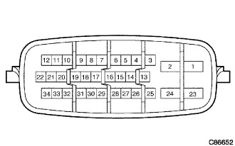

参照）
参照）EBD付きABSシステム ＥＣＵ端子配列 |
|  |
参照）| 端子番号 | 端子記号 | 端子名称 |
|---|---|---|
| 1 | +BS | ソレノイド駆動用電源 |
| 2 | GND1 | ボデーアース |
| 6 | P | Pレンジ信号 |
| 8 | FL- | 左前車輪速センサマイナス |
| 9 | FL+ | 左前車輪速センサプラス |
| 10 | STP | ストップランプスイッチ |
| 11 | RL+ | 左後車輪速センサプラス |
| 12 | RL- | 左後車輪速センサマイナス |
| 13 | WA | ABSウォーニングランプ |
| 14 | D/G | ダイアグ通信信号 |
| 15 | TS | センサテスト端子 |
| 16 | TC | テスト端子 |
| 18 | PKB | パーキングブレーキスイッチ入力 |
| 20 | N | Nレンジ信号 |
| 23 | +BM | モーター駆動用電源 |
| 24 | GND2 | ボデーアース |
| 25 | IG1 | IG電源 |
| 26 | SP1 | メータ用車速信号出力 |
| 30 | FR- | 右前車輪速センサマイナス |
| 31 | FR+ | 右前車輪速センサプラス |
| 32 | BRL | ブレーキウォーニングランプ |
| 33 | RR+ | 右後車輪速センサプラス |
| 34 | RR- | 右後車輪速センサマイナス |
 |
SST（トヨタエレクトリカルテスター）を使用して、アクチユエータASSYのワイヤハーネス側コネクターの各端子とボデーアース間の電圧、導通を点検する。
| 端子番号 | 端子記号 | 入出力 | 測定項目 | 測定条件 | 基準 |
|---|---|---|---|---|---|
| 1 | +BS （ソレノイド駆動用電源） ←→ボデーアース | 入力 | 電圧 | 常時 | 10-14V |
| 2 | GND1 （ボデーアース） ←→ボデーアース | 入力 | 導通 | 常時 | 導通あり |
| 6 | P （Pレンジ信号） ←→ボデーアース | 入力 | 電圧 | シフトレバーPレンジ以外→Pレンジ | 1V以下→10-14V |
| 10 | STP （ストツプランプスイツチ入力） ←→ボデーアース | 入力 | 電圧 | ストップランプスイッチOFF→ON | 1.5V以下→8V以上 |
| 13 | WA （ABSウォーニングランプ出力） ←→ボデーアース | 出力 | 電圧 | IGスイッチON後、約3秒以上経過後 | 1V以下 |
| 18 | PKB （パーキングブレーキスイッチ） ←→ボデーアース | 入力 | 電圧 | パーキングブレーキ作動→開放 | 1V以下→10-14V |
| 20 | N （Nレンジ信号） ←→ボデーアース | 入力 | 電圧 | シフトレバーNレンジ以外→Nレンジ | 1V以下→10-14V |
| 23 | +BM （モーター駆動用電源） ←→ボデーアース | 入力 | 電圧 | 常時 | 10-14V |
| 24 | GND2 ボデーアース ←→ボデーアース | 入力 | 導通 | 常時 | 導通あり |
| 25 | IG1 （IG電源） ←→ボデーアース | 入力 | 電圧 | IGスイッチON | 10-14V |
| 26 | SP1 （メーター用車速信号出力） ←→ボデーアース | 出力 | 電圧 | IGスイッチON | 10-14V |
| 32 | BRL （ブレーキウォーニングランプ出力） ←→ボデーアース | 出力 | 電圧 | ブレーキウォーニングランプ点灯中 | 5-14V |